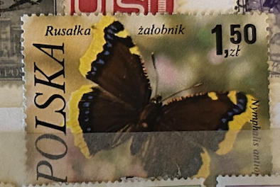
| SOURCE | TITLE| IMAGE MATCH | click to source page |
| eBay | Poland 2230 Butterflies | eBay | 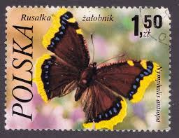 |
| eBay | Poland Stamp Scott #2231 1977 1.50z Nymphalis antiopa ⚜️*️⃣ ✉️ 0493 | eBay | 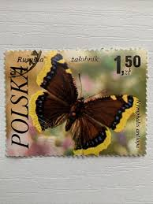 |
| Polska6.pl | Znaczki Polska6.pl - Sklep filatelistyczny | 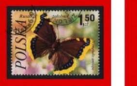 |
| Etsy | Buy Philatelist Portfolio Lmt'd Edtn Genuine Foreign Stamp Certified Beauty Nature Online in India - Etsy | 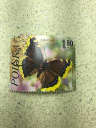 |
| Polska6.pl | Znaczki Polska6.pl - Sklep filatelistyczny | 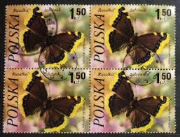 |
| Alamy | A postage stamp printed in Poland shows image of a butterfly - nymphalis antiopa, circa 1980 Stock Photo - Alamy | 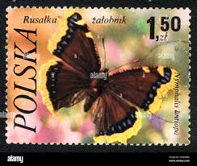 |
| Etsy | Vintage Postage Stamps (set of 2), Poland Postage Stamp, Not Used, Collectible, Old Stamp, Butterfly, Butterfly Stamp, Beautiful Butterflies - Etsy | 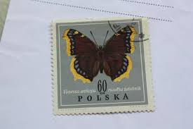 |
| kje.jp | ポーランドの蝶蛾切手 | 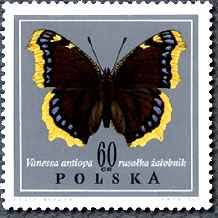 |
| Stamp and Cover Galaxy | SCG102 Poland Butterfly Stamp Set – Nymphalis, Apatura & Vanessa Speci – Stamp and Cover Galaxy | 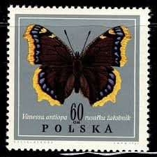 |
| Discover 12 polish stamps and stamp collecting ideas | stamp, postage stamps, post stamp and more | 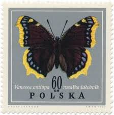 | |
| Are these wings deformed? : r/Entomology | 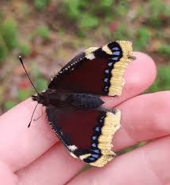 | |
| tooltraderskzn.co.za | Heat Transfer Paper Belidome 4-Pack Working Hats With Sweatbands - Adjustable Scrub Caps For Healthcare & Cleaning Dental Scrub Caps Women | 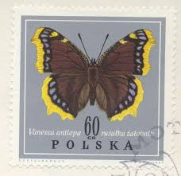 |
| What are these caterpillars on my bush? | 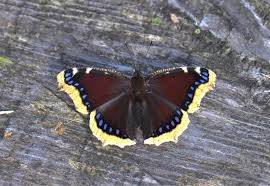 | |
| So many great photos. What do do you all shoot with - iphones, macro? Just wondering - any tips or tricks? Hard to get close to the little ones | ||
| Never seen one of these around here. So pretty...Socal : r/whatsthisbug | 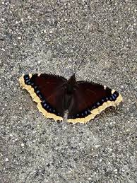 | |
| Butterflies and Moths of North America | Butterfly, Moth, and Caterpillar Photographs from West Virginia | Butterflies and Moths of North America | 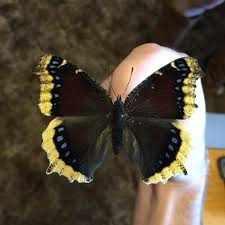 |
| Shutterstock | Karnal Haryana India -august 1 2025-closeup Stock Photo 2669023541 | Shutterstock | 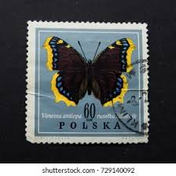 |
| what butterfly is this? (los angeles) : r/insects | 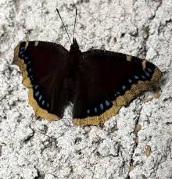 | |
| eBay UK | Philatelist Portfolio Lmt'd Edtn Genuine Foreign Stamp Certified Beauty Nature | eBay UK | 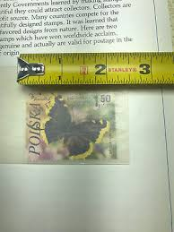 |
| What does it mean when you see a mourning cloak butterfly? | 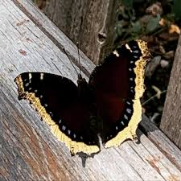 | |
| Butterflies and Moths of North America | Butterfly, Moth, and Caterpillar Photographs from Washington | Butterflies and Moths of North America | 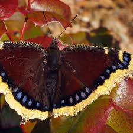 |
| University of Kentucky | How To Make Butterfly Gardens | Entomology | 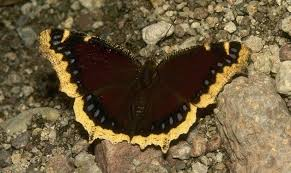 |
| Tumblr | Insects of Southwest Utah | My Public Lands | 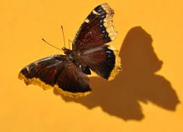 |
| iNaturalist | Mourning Cloak (NPS Manassas National Battlefield Park Butterflies and Moths) · iNaturalist | 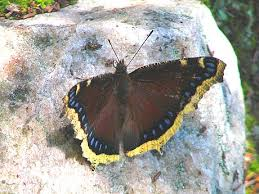 |
| Coastal Maine Botanical Gardens | How Butterflies Survive the Cold Maine Winters | Coastal Maine Botanical Gardens | 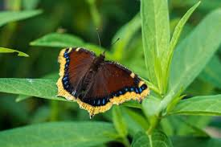 |
| Some cutie flutterflaps I met while walking🦋 : r/Butterflies | 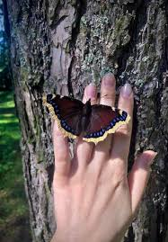 | |
| So pretty : r/whatsthisbug | 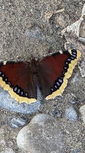 | |
| Butterflies and Moths of North America | Butterflies and Moths of Montana | Butterflies and Moths of North America | 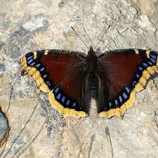 |
| Online Athens | Flights of fancy: UGA professor and his search for 'superlative' butterflies and moths | 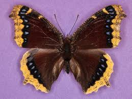 |
| A Betterway To Print | Mark McCosker - A Betterway To Print | |
| What type of moth Bend, OR butterfly is this? | 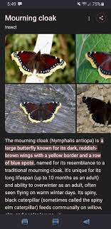 | |
| eBay | Finland #Mi994 MNH 1986 Red Cross Camberwell Beauty [B236] | eBay | 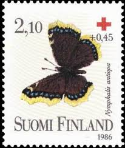 |
| Dave's Garden | Bug Pictures: Mourning Cloak (Nymphalis antiopa) by okus | 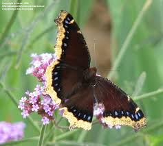 |
| Monsieur Papillon | Butterflies from Québec - Mourning cloak | 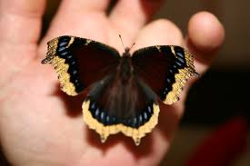 |
| Colnect | Stamp: Camberwell Beauty (Nymphalis antiopa) (Bosnia and Herzegovina, Serbian Admin.(Butterflies (2014)) Mi:BA-SR 618,Sn:BA-SR 492,Yt:BA-SR 573,WAD:XH006.2014 📮 | 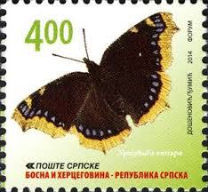 |
| naturegardenlife.com | Butterfly Sampler | Nature, Garden, Life | 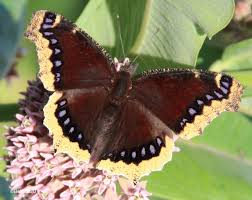 |
| The Cortland Area Tribune | Creature Feature – The Mourning Cloak Butterfly | The Cortland Area Tribune | 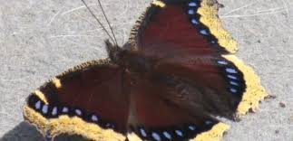 |
| Shutterstock | 88 Vanessa のantiopa Royalty-Free Images, Stock Photos & Pictures | Shutterstock | 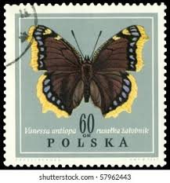 |
| BuzzFeed | Ella Purnell Shares Caterpillar Infestation Videos | 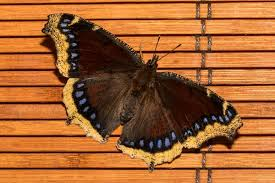 |
| Lake Hefner pics ☺️ | 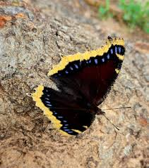 | |
| Mourning cloak butterfly 2024-08-08 East of Langdon | 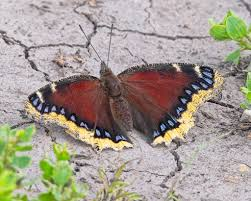 | |
| Today we saw the first Mourning Cloak Butterfly of the season! | 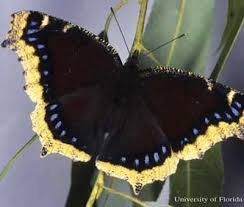 | |
| Flickr | Trauermantel | skycaptain.blue | Flickr | 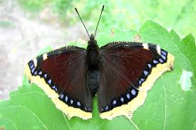 |
| Morning cloak butterfly spotted in Grand Haven | 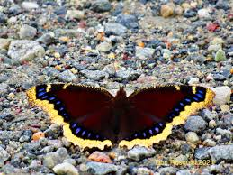 | |
| Identify California tortoiseshell caterpillar in Skagit County | 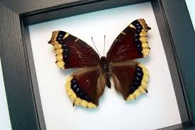 | |
| Flickr | Mourning Cloak (Rouwmanel) | The Mourning Cloak (Nymphalis a… | Flickr | 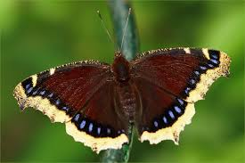 |
| Britannica | Mourning cloak butterfly | insect | Britannica | 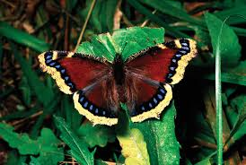 |
| UC Irvine | Mourning Cloak Butterfly, Nymphalis antiopa | 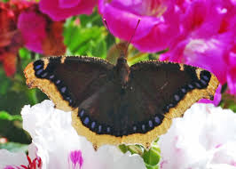 |
| Identifying the green beetle and orange dragonfly at Tennessee Valley | 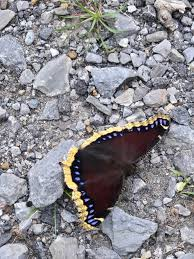 | |
| pro-babochek.ru | Dark butterfly with a yellowish rim: features and photos | 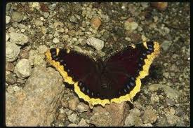 |
| 300 Butterflies: My Life List ideas | beautiful butterflies, butterfly, insects | 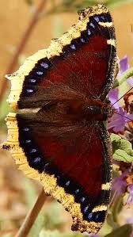 | |
| Yale University | Inside: | |
| abirdshome.com | Butterflies of Wyoming -- Nymphalis antiopa | |
| What type of anglewing butterfly is in the first photo? | ||
| BugGuide.Net | Chrysalis of Mourning Cloak - Nymphalis antiopa - BugGuide.Net | |
| Is it a Nymphalis antiopa, the mourning cloak butterfly? | ||
| Butterflies and Moths of North America | Regional Butterfly and Moth Information | Butterflies and Moths of North America | |
| Sagebrush Butterflies | Mourning Cloak Butterfly dried specimen – Sagebrush Butterflies | |
| Homeschoolers Anonymous | March 2015 – Homeschoolers Anonymous |